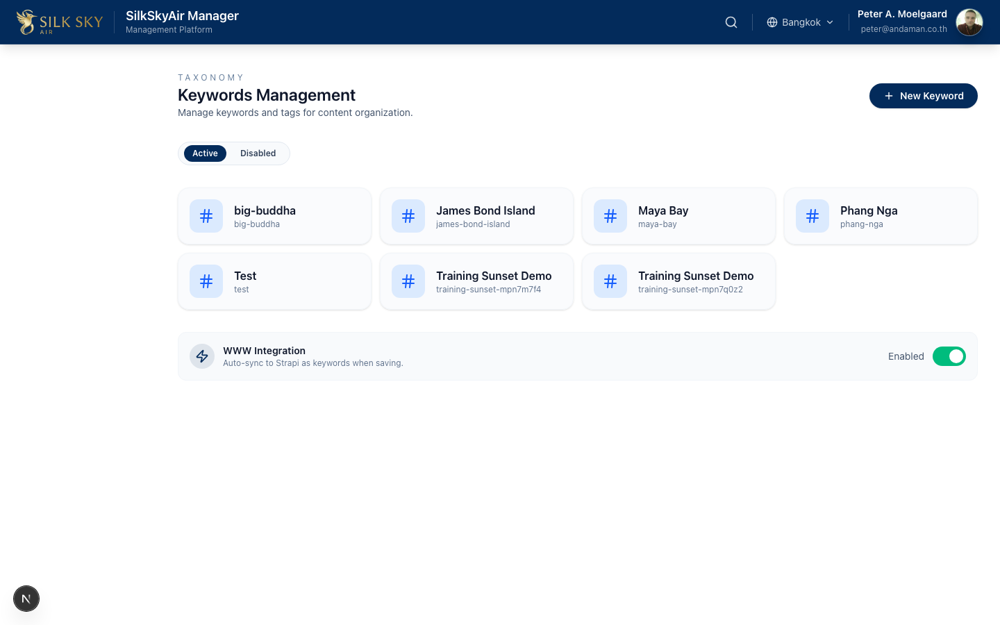
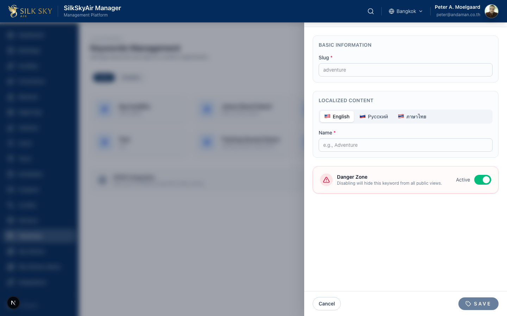
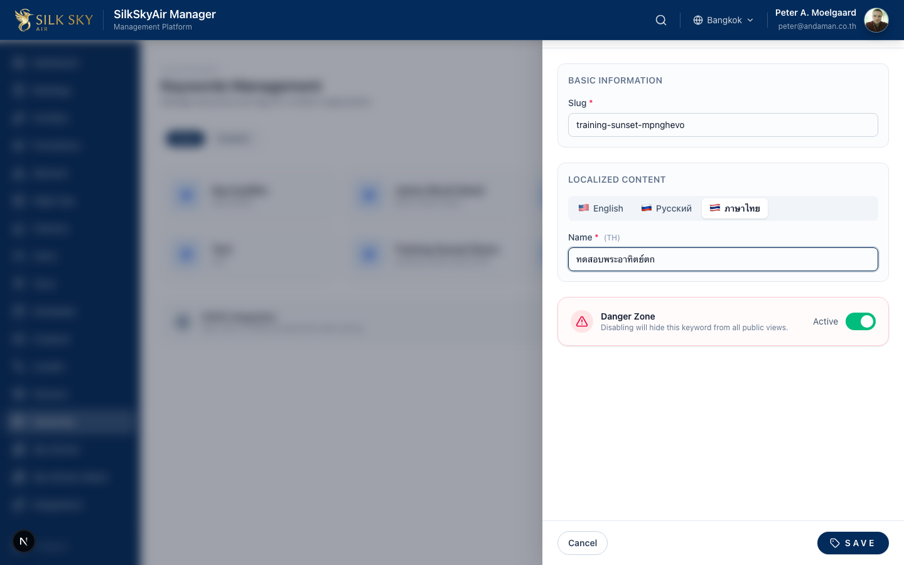
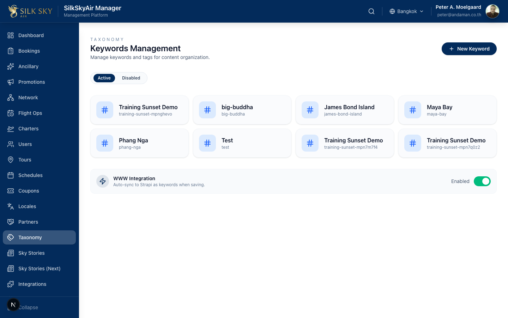
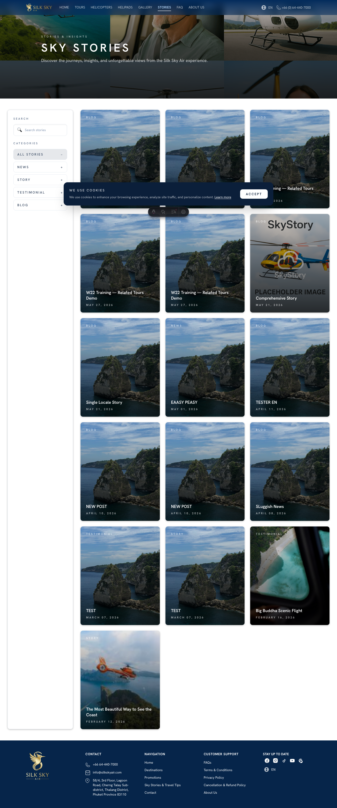
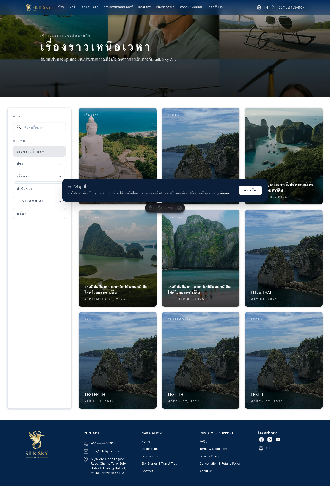

Keyword Multi-Locale Sync
App: BackOffice (with verification on the public WebSite) Who uses it: Content editors, SEO/marketing staff, translators. What it does: When you create a keyword in the Taxonomy view, you fill its name in every locale tab (English / Thai / Russian) and click Save. The keyword and all its locale variants publish automatically to Strapi and surface on the public WebSite — no manual per-locale entries.
Before you start
- BackOffice staging:
https://staging.manager.silkskyair.com - WebSite staging:
https://staging.silkskyair.com(used for verification) - Account:
peter@andaman.co.th - Prerequisites: the Strapi sync token is configured for staging BackOffice (already true). A published Sky Story exists for verification on the public site.
Step-by-step
Step 1 — Open the Taxonomy view
In BackOffice, navigate to Taxonomy (URL: /taxonomy).

What you should see: A page headed Keywords Management with a grid of existing keyword cards and a New Keyword button.
Step 2 — Click "New Keyword"
Click New Keyword to open the creation form.

What you should see: A form with two fields — Name (placeholder "e.g., Adventure") and Slug (placeholder "adventure"). The English locale tab is selected by default.
Step 3 — Fill English, then switch locale tabs
Type a recognisable name in English. The slug auto-derives — leave it or override. Then click the ภาษาไทย tab and fill the Thai name. Repeat for Русский.

What you should see: Each locale tab clears the Name field when selected, so you fill each one independently. The slug field stays constant across tabs.
Step 4 — Save
Click Save.

What you should see: The new keyword appears as a card in the grid. Behind the scenes, the keyword's locale variants are created in Supabase and auto-published to Strapi — verifying this on the public site is the next step.
Step 5 — Verify on the public WebSite (English)
Open the public Sky Stories landing page in English: https://staging.silkskyair.com/sky-stories.

What you should see: The new keyword surfaces wherever keywords are rendered (e.g. as a tag chip on stories that use it).
Step 6 — Verify on the public WebSite (Thai)
Switch the public site's locale to Thai (/th/sky-stories).

What you should see: The same keyword present on the Thai version, using the Thai name you typed at Step 3.
Tips & common questions
- What if I forget to fill a locale tab? The keyword saves anyway, but that locale will fall back to the English name in Strapi. To fix later, edit the keyword and fill the missing locale.
- Why is the slug the same across locales? Slug is non-localised (Strapi v5 convention for this content type). Translated names live under one
documentId. - What if the Strapi sync fails? The Save button still enables and the keyword lands in Supabase. The Strapi side is async — a sync failure is logged but not surfaced in the UI. If a keyword is missing from the public site after a few minutes, check Strapi admin or the BackOffice logs.